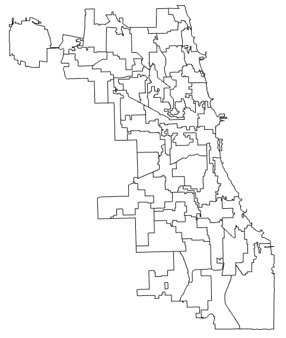

Civic User Testing Group
The Civic User Testing Group is a set of regular Chicago residents who get paid
to test out civic apps.
Thank you!
Thanks for signing up to the a member of the CUT Group. You should receive a confirmation email nowish and you $5 VISA gift card within a week. If you have any questions, please write Dan O'Neil of the Smart Chicago Collaborative at doneil@cct.org.
Please help spread the word about our nascent group-- we need members from all over the city. Here are some ways you can help:
- Tweet: Tweet
- Facebook:
